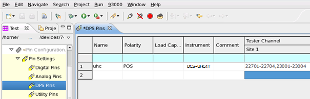
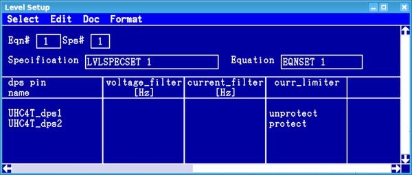

UHC4T specific setup tasks
UHC4T configuration in the model file
The UHC4T cards must be defined in the DPS section and in the POGOCABLING section of the model file, or the CARD_CONFIGURATION section of the tester.model file. The software identifier is DCS-UHC4T.
Two different pogo cable assemblies are available for the UHC4T card. The two pogo cable assemblies must be defined in the sections of the model files as follows:- DC Scale UHC4T with E8013UHP
cable
The four channels are routed to two pogo blocks that are combined into a single unit, thereby occupying an S1/S2 pogo block pair. Only the S1 position must be entered in the model file, the software blocks the adjacent S2 position automatically.
Example (tester.model):CARD_CONFIGURATION slot = 107, HW = UHC4T, pogoblocks = 230Example (model/legacy):
The example above shows that only pogo block A is defined as block 230 in the POGOCABLING section. Pogo Block B is automatically assigned to the adjacent S2 position 430.POGOCABLING 214: pogoblocks = "230" ... ... DPS 23001-23004: type = DCS-UHC4T ... ...Note The DPS section shows that all four channels are assigned to pogo block 230 although they are physically wired to the two blocks 230 and 430. - DC Scale UHC4T with E8024UHPS
cable
In contrast to E8013UHP cable, the four channels are routed to two pogo blocks that can be installed in any position within the limitations presented by the cable length. Both pogo blocks are to be defined by keywords type, followed by subtype and config.
Example (tester.model):CARD_CONFIGURATION slot = 108, HW = UHC4T, pogoblocks = 319, type = REDIRECT, subtype = E8024UHPS, config = 319:(319) 319:(322)Example (model/legacy):
The example above shows that pogo block A is defined as block 319 in the POGOCABLING section. The following codePOGOCABLING 217: pogoblocks = "319", type=REDIRECT, subtype=E8024UHPS, config="319=319,322" ... ... DPS 31901-31904: type = DCS-UHC4T ... ...type...,subtype..., andconfig...defines that the two pogo blocks of the E8024UHPS cable are installed at position 319 (Block A) and 322 (Block B).Note The DPS section shows that all four channels are assigned to pogo block 319 although they are physically wired to the two blocks 319 and 322.
Assignment of UHC4T power channels
| UHC4 / UHC4T channel | Physical pogo block | Tester Channel |
|---|---|---|
| P1 | B | aaa01 |
| P2 | aaa02 | |
| P3 | A | aaa03 |
| P4 | aaa04 |
The four Tester Channels channels are assigned to pogo block A although they are physically wired to two blocks.
For more information regarding the UHC4T channels and the physical pogo blocks, refer to UHC4T pogo pin assignment. For information regarding the Tester Channels, refer to DPS Pins editor.
Example:
The example above assumes that the physical block A is installed at position 319 and
block B at 322. The pogo cable assembly E8024UHPS is required
for this configuration. CAUTION All four channels
are assigned to pogo block 319 although they are physically
wired to the two blocks 319 and 322. |
Pin configuration
DC Scale UHC4T pins can be configured only for DPS operating mode. To configure UHC4T pins you use the DPS Pins editor. You do not need to specify a load capacitance for the UHC4T pins.
Ganging
The parallel connection of DC Scale UHC4T channels is supported for any number of successive channels within a card and any number of cards within a test head.
Cross-card ganging requires a daisy chain connection from the last channel of a card to the first channel of the next card within the ganging group: On the DUT board, the "Gang_out" pin is to be wired to the "Gang_in" pin of the next card.
Ganging groups are defined in the DPS Pins editor:
-
To specify ganging on the same card, you can specify the range of channels to be ganged by "-" (hyphen).
-
To specify ganging across UHC4T cards, separate the channel ranges on the cards by comma (,):
On the DUT board, pin "Gang_out" on physical pogo block "A" must be connected to "Gang_in" on physical block "B" of the next card. This will connect the ganging controller output of the first card (P4 = Tester channel ...04) to the ganging controller input (P1 = Tester channel ...01) of the next card.

Alternatively you can use the DDIC, DDIC? - (Define DUT Interface Connection) and DFPS, DFPS? - (DeFine Power Supply) commands in the pin configuration file to specify the ganging across UHC4T cards. For example:
hp93000,config,0.1
DDIC CONN,(230GO,227GI)
...
DFPS (23004,22701),POS,(VDDCI)At the beginning of the pin configuration file the DDIC command describes the DUT board traces that are needed to support ganging across UHC4T cards. First the DDIC command must define, which connections are available on the DUT board, then the gang can be defined by the DFPS command.
Equations
To use all features of the DC Scale UHC4T card, you must use equations. For details see Equation based level setup and DPSPINS resources (also DPSPINS).
Level setup
The Level Setup tool displays the currently active settings of the DC Scale UHC4T card as follows:
- Force voltage (vout)
- Clamp current (ilimit)
- Settling time (t_ms)
- Off current state (offcurr)
- Force voltage range (vout_frc_rng)
- Clamp current range (iout_clamp_rng)
- disable_const_curr_check flag
- Connect state (connect_state)
- Current limiter protection (curr_limiter).
Except for the connect state and the current limiter mode, the Level Setup tool does not display UHC4T specific features (for example, fast preload time and voltage drop threshold).
Load changes
The peak mode of the UHC4T minimizes the step response time after a load change, but the load change delivers a peak current for a few microseconds.
One of the UHC4T protection features is the automatic disconnection of a channel if the currents increase too high during connect or disconnect (load change). The voltage ramp parameters (vout_rise_..., vout_fall_...) allow you to specify setup times and slew rates separately for rising and falling DPS voltage transitions, and thus avoid disconnection of channels due to too high currents.
Current limiter protection
The UHC4T provides an integrated current limiter protection mode. When activated, the shutdown of the system due to too high power consumption of the UHC4T card can be avoided. For details on the security and safety features see section Current limiter protection in UHC4T features.
...
DPSPINS UHC4T_dps1
vout = 4.0 # [V]
ilimit = 5000.0 # [mA]
DPSPINS UHC4T_dps2
protect
vout = 3.3 # [V]
ilimit = 10000.0 # [mA]
...
|
Note The protection is disabled by default
if parameter protect is not defined in
the equations.
|
The setting of protection can be inspected and modified in the DPS pins view of the Level Setup tool. The value is available in the rightmost section of the window in the curr_limiter column:

If a protection case occurred, a flag is set which can be read with the dc_tml DpsStatus and the multi_group_dc_tml DpsStatus test methods.
Functional changes
- Introduced in SmarTest 6.5.0